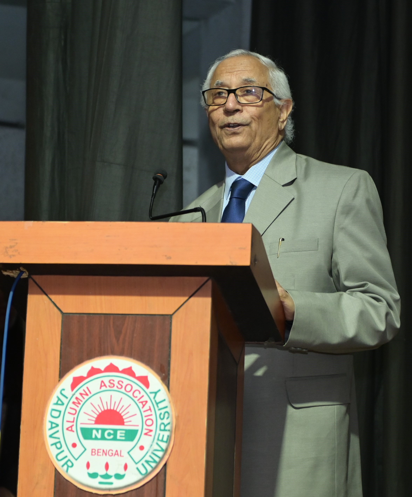
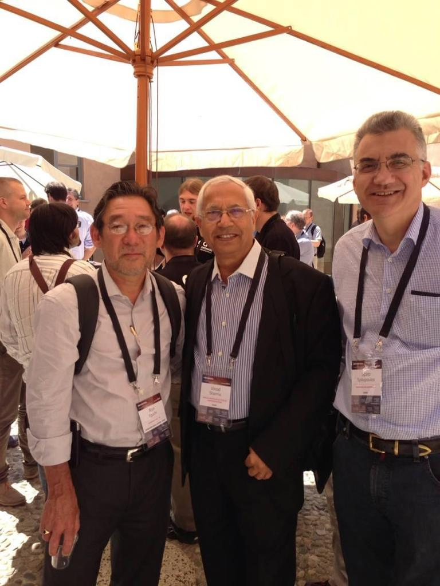
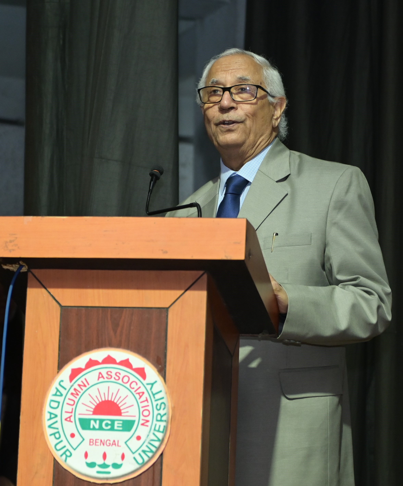
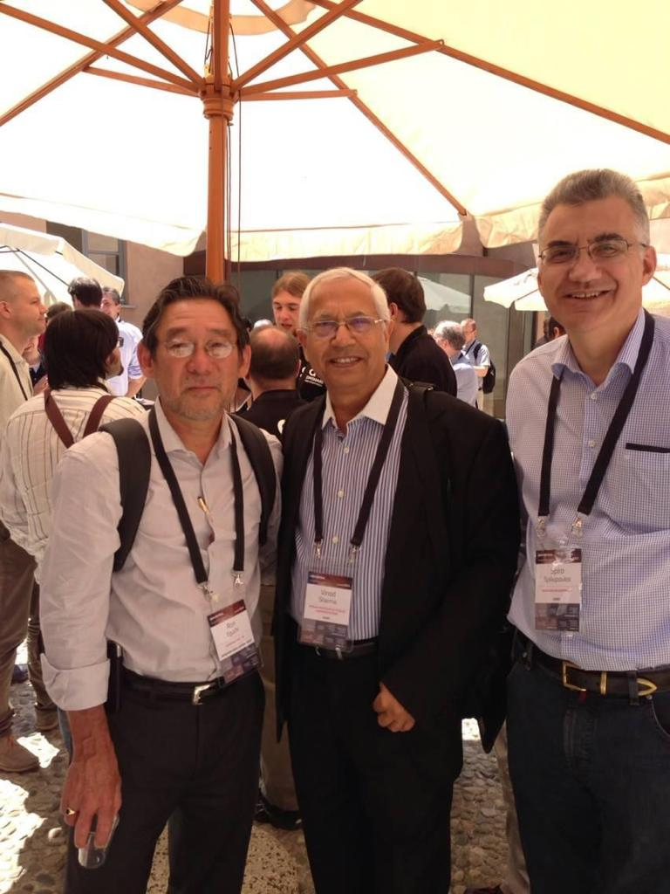
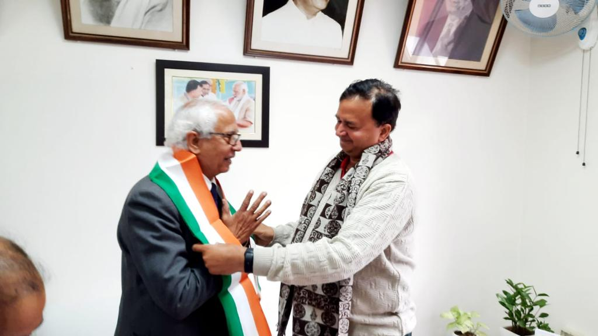
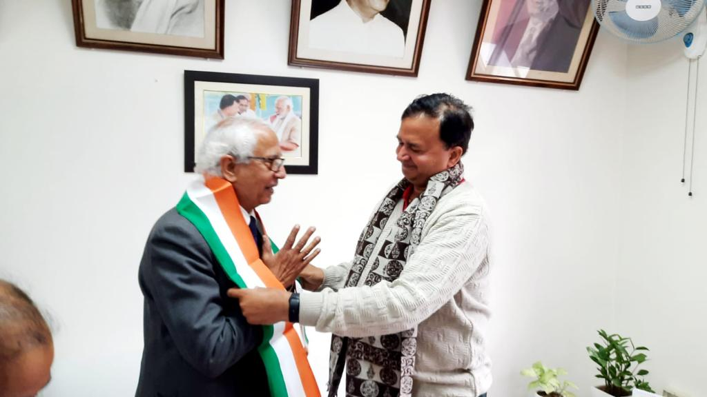

welcome to my website
Hello, I am PROFESSOR VINOD KUMAR SHARMA
Senior Professor, Drought Management Consultant
Indian Institute of Public Administration
Visiting Professor, Kyoto University, Japan
Adjunct Professor, Amrita University, Amritapuri, India
Vice Chairman, Sikkim State Disaster Management Authority, Gangtok, Sikkim
Member UN ISDR Asia Science, Technology and Academic Advisory Group (2015-2020)
Member, Committee for framing National Science, Technology and Innovation Policy 2020 of GOI and Chairman, Sub-Group on Capacity Building
View CV


 



 



Social Media
YouTube
Disaster Risk Reduction
IIPA Official
Facebook
Discover my most recent publication on Facebook.
Twitter
Explore my latest tweets on Twitter.